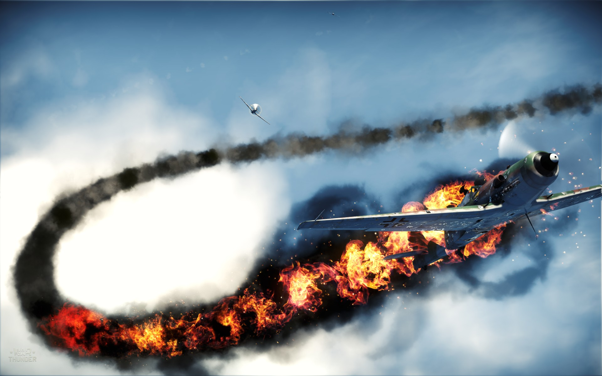

War Thunder is een online multiplayer-gevechten game ontwikkeld door Gaijin Entertainment voor Microsoft Windows, Mac OS X, Linux, en de PlayStation 4.
Het is momenteel in de open beta testfase met spelers in staat om feedback over eventuele bugs te geven voordat de eerste release van de volledige spel. Het spel heeft een goede reputatie met zijn speler-basis voor het maken van mooie, hoge kwaliteit trailers en ter herdenking van vele vaak vergeten veldslagen en historische figuren belangrijk om de Tweede Wereldoorlog luchtvaart.